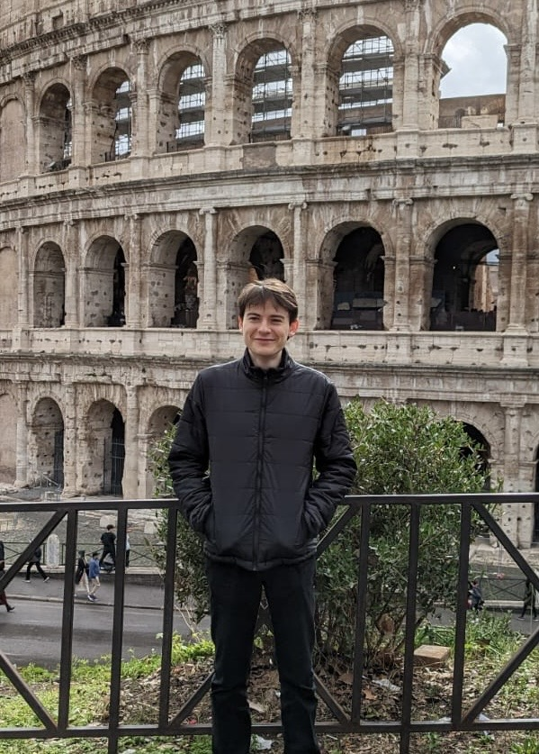

I live in Cavaion Veronese. In 2015, I started building a sports community on Instagram, which I sold in 2020 (+1.2M followers).
Now I invest in people who are shaping a desirable future 🚀
You can discover my writing here and my graphic design here.